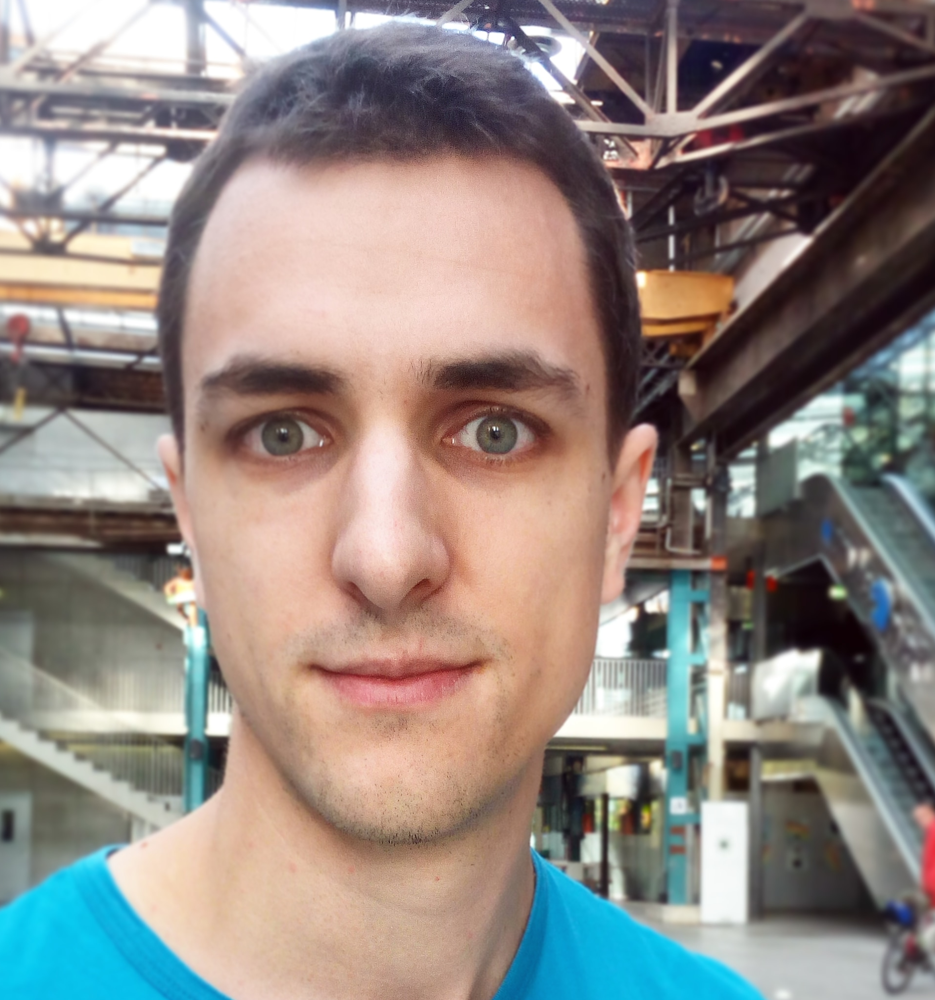

Dominik Winterer
|  | Ph.D. Student |


Dominik Winterer is a Ph.D. student advised by Prof. Zhendong Su at ETH Zurich and a member of the AST lab. He is interested in formal methods problems in Programming Languages and Software Engineering. Before his Ph.D. studies, Dominik did undergraduate research in Automated Planning (branch of symbolic AI).
Currently, Dominik is developing tools for stress-testing SMT solvers in the
Yin-Yang project.
Check out our twitter account @testsmtsolvers for most recent bug findings in Z3 and CVC4!

 We have recently released our Yin-Yang framework tool.
It is an umbrella release with both Semantic Fusion and OpFuzz from our PLDI and OOPSLA papers. The tool has already found 1,000+ bugs in Z3 and CVC4. Please check it out!
We have recently released our Yin-Yang framework tool.
It is an umbrella release with both Semantic Fusion and OpFuzz from our PLDI and OOPSLA papers. The tool has already found 1,000+ bugs in Z3 and CVC4. Please check it out!

News
10-30-2020 Our SMT Solver testing framework YinYang has been officially released on GitHub.
09-31-2020 Our paper on Type-Aware Operator mutation was conditionally accepted at OOPSLA!
05-13-2020 Our paper on Semantic Fusion won a distinguished paper award at PLDI 2020!
05-12-2020 I'll be a student volunteer at PLDI 2020.
Publications
On the Unusual Effectiveness of Type-Aware Mutations for Testing SMT Solvers
Dominik Winterer*, Chengyu Zhang*, Zhendong Su
In Proceedings of SPLASH/OOPSLA 2020
* Both authors contributed equally.[slides | video abstract | talk video]
Validating SMT Solvers via Semantic Fusion
Dominik Winterer*, Chengyu Zhang*, Zhendong Su
In Proceedings of PLDI 2020
* Both authors contributed equally.
 Distinguished Paper Award
Distinguished Paper Award
[slides | video abstract | talk video]
Teaching
Teaching Assistant at ETH Zurich
Automated Software Testing, Spring 2021
Data Modelling and Databases, Spring 2020
Research Topics in Software Engineering, Spring 2020, 2021, Fall 2020
Compiler Design, Fall 2019, 2020
Teaching Assistant at University of Konstanz
Decision Procedures Fall 2018
Student Teaching Assistant at University of Freiburg
Model Checking Fall 2016
Theoretical Computer Science Fall 2016
(Co-)supervised Theses
Jiwon Park (Bachelor thesis, as of Jan 2021)
Dylan Wolff (Master thesis, completed)
Services
Subreviewer ICAPS '18